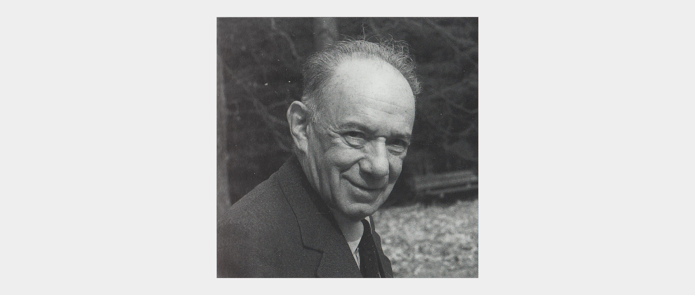
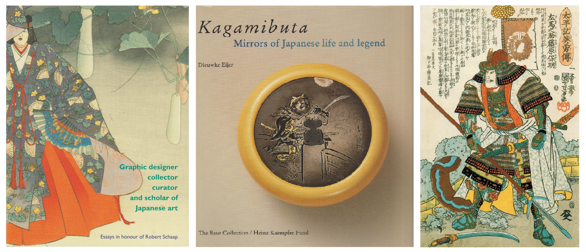

Covers of Graphic designer, collector, curator and scholar of Japanese art, essays in honour of Robert Schaap (2013) and Kagamibuta (1994), and an illustration from Heroes of the grand pacification (2005)
The Heinz M. Kaempfer Fund was founded in 1989 with the aim to promote and make accessible the study of the Japanese fine and applied arts through, among other means, the provision of financial support for young scholars.
The Fund was named after Heinz Kaempfer (1904-1986), former secretary and chairman of the Society for Japanese Arts. From the 1950s onwards Kaempfer played a prominent role in the promotion and appreciation of Japanese art in the Netherlands. He was involved in several of the Society’s publications and exhibitions. On his 75th birthday Kaempfer, was honoured with a collection of articles, A Sheaf of Japanese Papers, with contributions by scholars from all over the world.
Heinz KaempferHeinz Kaempfer Fund International Essay Contests took place in 1992, 1994, 1997, and 2000.
For a complete overview of activities organised by the fund, please see the following file: HKF activities. Our official policy plan (in Dutch only), can be found here: Beleidsplan.
Covers of Graphic designer, collector, curator and scholar of Japanese art, essays in honour of Robert Schaap (2013) and Kagamibuta (1994), and an illustration from Heroes of the grand pacification (2005)
Boardmembers do not receive any financial compensation. Our current financial reports can be found here: Balance sheet en Profit and loss statement (both documents are in Dutch only).
The Heinz M. Kaempfer Fund aims to promote the study of the Japanese fine and applied arts, and the publication of research results through the provision of financial support for young scholars.
Applicants are kindly requested to submit their proposal using the application form below. Please include a brief description of the project and the research method, as well as a timeline and a justification of the requested sum.